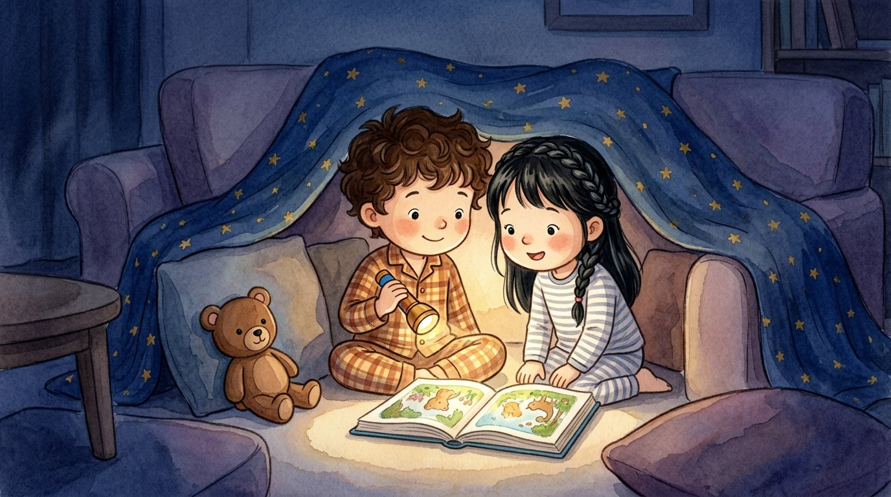

Grade 1 · Science · 1-PS4-2
The pillow cave
A story about light and darkness.
Three new words
What lets us see things.
When there is no light.
A small lamp you hold in your hand.
Tap a picture to hear the word and what it means.
The story
Israel and Lucía made a cave with cushions and a blanket.
They crawled inside and closed the door.
Everything was black. It was darkness!
“I can’t see my book,” said Lucía. “I can’t even see my hand!”
Israel turned on a flashlight.
The light reached the book, and now they could see it!
Israel pointed the flashlight at the roof of the cave.
They saw the little stars on the blanket, but the book disappeared in the dark.
“We only see what the light shines on,” said Lucía.
Israel pointed the flashlight at his teddy bear, Canela. There she was!
At the end, they opened the cave, and the sunlight came in.
To see things, we need light.
Questions
Listen to the question and tap the right picture.
-
Question A. Why couldn’t Lucía see her book?
In the dark, we cannot see anything.
-
Question B. What happened when the light reached the book?
When light shines on something, we can see it.
-
Question C. Why couldn’t they see the book when the flashlight pointed at the roof?
The book was left in the dark, with no light.